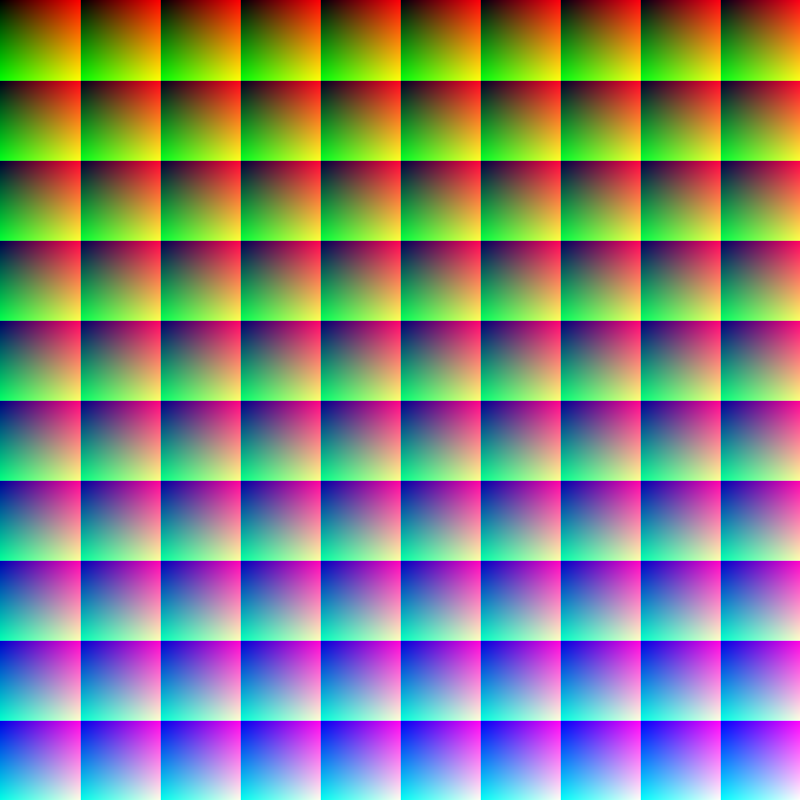
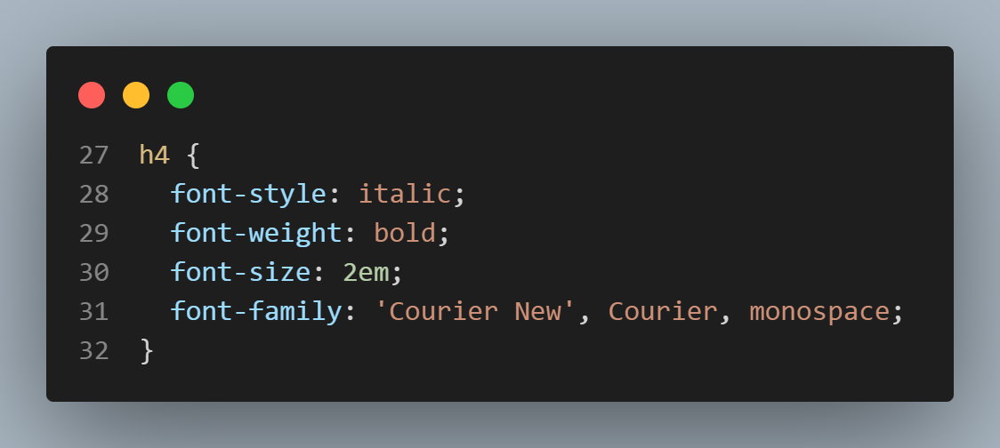

1) COLORS
a) The basic about colors in the web
In the Web colors are displayed in the monitors combining RED, GREEN, and BLUE light. That's where the name RGB (colors) come from.
sRGB is a standard RGB (red, green, blue) color space that HP and Microsoft created cooperatively in 1996 to use on monitors, printers, and the World Wide Web.[2] It was subsequently standardized by the International Electrotechnical Commission (IEC) as IEC 61966-2-1:1999.[1] sRGB is the current defined standard colorspace for the web, and it is usually the assumed colorspace for images that are neither tagged for a colorspace nor have an embedded color profile.
Wikipedia RGB
So RGB is the standard but you can talk about RGB colors with your computer in other languages
. In other words, you can set CSS colors either naming ther by their Red, Green and Blue values or by any other numeric patterns your computer can understand as colors in a CSS selector (hexadecimal, for instance, is very used).
But colors may attend by their names too.
All modern browsers support the following 140 color names: Please, it's better to check them at w3schools.
If you want to go deeper in the RGB universe, like:

Then you can read all the Wikipedia article mentioned above.
But if you've had enough for while, you may stick to those ONE MILLION colors you can use with this lesson and see all of them at once right here:

Picture from wikipedia
b) The basic about colors in CSS
As we saw in the CSS Intro page, all the 3 ways of implementing CSS into your page are somehow preceded by the word "style" or "stylesheet".
So, when you're in a "style" environment, which means a CSS environment, the most common forms of applying colors is through both "color" (changes the color of the text) and "background-color" (the name says it all) properties of the CSS declaration. Let's check how it fits in the 3 ways of CSS:
Internal CSS:
Inline CSS:
External CSS:
This is the HTML SIDE of the external CSS (a link mentioning stylesheet
that leads to a separate .css
extention file):
And this is the CSS SIDE of the external CSS:
1.1) Color palette
In color theory, a color scheme (or palette) is the choice of colors used in various artistic and design contexts. For example, the "Achromatic" use of a white background with black text is an example of a basic and commonly default color scheme in web design. Color schemes are used to create style and appeal. Colors that create an aesthetic feeling when used together will commonly accompany each other in color schemes. (Wikipedia - Color_scheme)
You may not realize but every graphic design you see, be it a website or an advertising and even a movie, has its color palette. And it is used to make you feel something. We'll see the psychological effect of colors later in the course. But if you are curous about it, just check this article by Nicole Martins Ferreira: "How color meanings affect your brand".
To build your own color pallete you may first go to Adobe Colors. The color wheel (or image in the Extract Theme tab) can be used to generate a color palette, which appear below the wheel.
On the left side of the page you can choose among ten color harmony rules.
At any time you can move the small balls in the color wheel to choose your own hue and saturation for each color rule.
Under each color rectangle below the color wheel is its hexadecimal code, which an be copied and pasted directly on your css code.

1.2) Picking a color from screen
To pick a color or a theme you like from any image you have in your device just open the same Adobe Colors as above linked and choose the "Extract Theme" tab. The screen will be the following:

Once you get there, put an image file into the center rectangle, as directed.
If your target image is a website, just make a "print screen" from that page and submit the image as directed.
See the test I made with a watercolor by my friend José Guyer Salles:

Again:
At any time you can move the small balls in the color wheel to choose the colors you want to pick, if different from what was automatically done.
Under each color rectangle below the color wheel is its hexadecimal code, which an be copied and pasted directly on your css code.
1.3) Making a CSS gradient
First let's make a 500 pixels high div
we can work with background colors inside.
A word about the div
:
If the width is not set, the browsers assume that it's 100% wide (margins left and right = zero).
If a width is set, a margin: auto;
CSS centralizes it. Check a real example and its code below:
The div class is called gradient
and displays a bonus violet box-shadow
This is a radial gradient from white to blue. There are other forms to do it, like linear in several directions (including directions in degrees, like "45deg" - positive or negative - for instance), repeating linear and repeating radial. VS Code's Emmet gives you almost all those options when you start writing background-image
in the CSS area/file.
To each color of the gradient a percentage can be attributed right after its name (or value) so it accupies more space or less space in the gradient.
And again Adobe Colors can help you extracting & creating a gradient from any image you like.
End of the colors <article class>.
2) Typography
Typography is the art and technique of arranging type to make written language readable and appealing when displayed. The arrangement of type involves selecting typefaces, point sizes, line lengths, line-spacing (leading), and letter-spacing (tracking), as well as adjusting the space between pairs of letters (kerning). The term typography is also applied to the style, arrangement, and appearance of the letters, numbers, and symbols created by the process.
The above quotation from wikipedia gives us a hint that, as well as colors, typefaces can cause some level of emotios, feelings, to the reader. And continuing with Wikipedia:
Typography has long been a vital part of promotional material and advertising. Designers often use typefaces to set a theme and mood in an advertisement (for example, using bold, large text to convey a particular message to the reader).[49] Choice of typeface is often used to draw attention to a particular advertisement, combined with efficient use of color, shapes, and images. Today, typography in advertising often reflects a company's brand.
A brand may use typography to express its theme, personality, and message. Just by looking at the typeface, viewers can get an idea about the message and personality of the brand, which the brands are fully aware of and are tapping into the power of good typography.
Typefaces used in advertisements convey different messages to the reader: classical ones are for a strong personality, while more modern ones may convey clean, neutral look. Bold typefaces are used for making statements and attracting attention. In any design, a balance has to be achieved between the visual impact and communication aspects. Digital technology in the twentieth and twenty-first centuries has enabled the creation of typefaces for advertising that are more experimental than traditional typefaces.
Please, read id directly from Wikipedia:
2.1) How to choose fonts in css
As you must have noticed in your previous experience with text softwares, a kind of letter is called font
. In fact it's been called font since 1995, according to the Wikipedia article above.
This paragraph is written in a different font family as the rest of the page. And it is applied with inline CSS as follows:

As all the other CSS style effects, you may choose to apply it by inline or internal or external CSS
Note that when the font family name is composed of more than one word, it must be between quotes,like the "Arial Narrow Bold" in the above code snippet.
There are always 3 types of font in each Emmet suggestion. It's called a
safe combination
that provides options to a certain device (mobile, tablet, Smart TV, PC, you name it) in case it doesn't have one of the chosen. In that case, a very similar one will be used.
If you don't mind which particular font will be used, you may always choose serif
or sans-serif
as a font family and there will be no mistake. Every device must have at least one of each kind to display.
2.2) Font sizes
2.2.1) Absolute mesurements:
- cm (centimeter) can have different displays depending on the size of the device.
- mm (milimeter) can have different displays depending on the size of the device.
- in (inch) can have different displays depending on the size of the device.
- px (pixel) can have different displays in Apple retina monitors.
- pt (point) A
printed in paper
measurement.
- pc (paica) A
printed in paper
measurement.
2.2.1) Relative mesurements:
- em (in proportion to the capital letter hight of the font size).
- ex (in proportion to the "x"" hight of the font size).
- rem (in proportion to the root [top parent's] font size).
- vw (in proportion to the viewport [the screen] width of your device).
- vh (in proportion to the viewport [the screen] hight of your device)
- % (in proportion to the parent element)
CSS different units for expressing length according to www.w3.org:

You may also check it from MDN Web Docs:
MDN web docs about font size.
Or even according to w3schools:
w3schools about css font size.
2.2.2) Font weight
A bolder font style.
A lighter font weight.
And so on. You can choose. See Emmet's options:
From 100 to 900 are values that range from the equivalent to lighter (100) to bolder (900).
2.2.3) Other styles
Of course all the styles you already apply in MS Word are available here, like italic (made with the <em> tag) and bold (made with the <srtong> tag).
Underline is made with text-decoration: underline;
simple declaration in the internal and external CSS.
But to make it inline, there must be a <span> tag, like here.

But the above works better in one word or a few words. To make it in block (like all the paragraphs, all the h1 titles, the whole page, a group of paragraphs or one paragraph) its better to make it CSS internal or external, like this:

To make a shorthand (to use 1 line instead of 4) of the above just declare font: and put the properties in the following order:
style weight size family
Like that:
font: italic bolder 2em 'Courrier New'
Note: you don't have to declare all the 4 properties, but you must mantain the same order, even skipping some of them.
2.2.4)